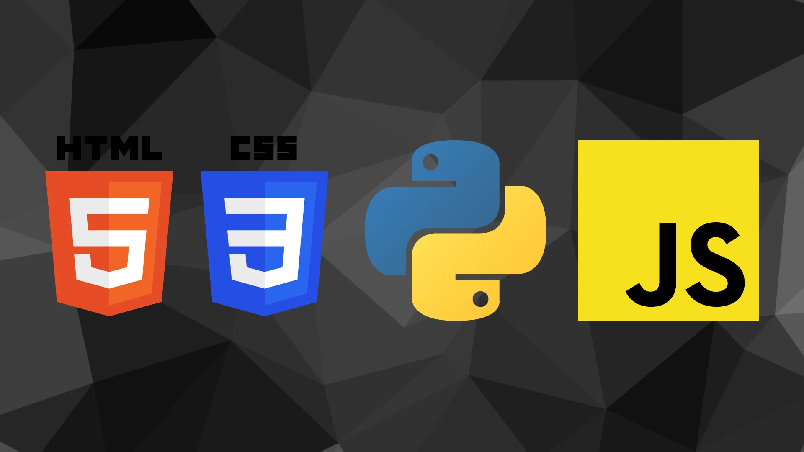
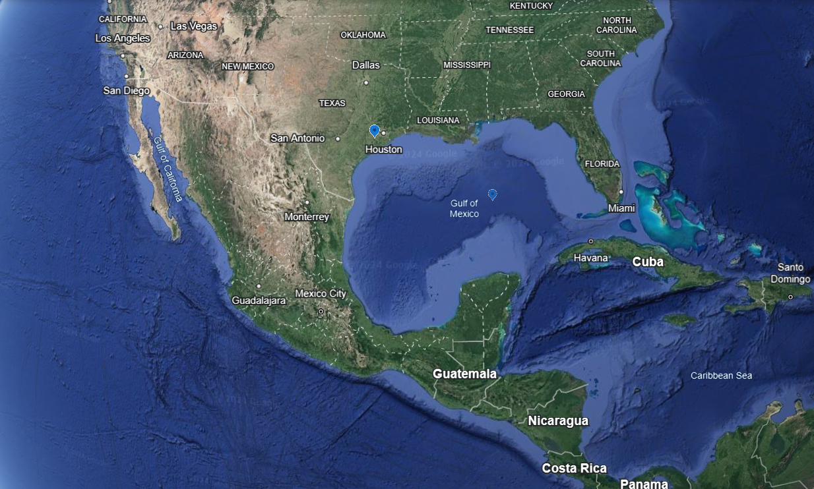

About me.
Creating wonderful and functional projects is what I love doing and thats why i love tackling new challenges
My Stack.
My Home.
My Story.
I was born in Nigeria, a place where I developed a deep love for all forms of artistic expression, from drawing and storytelling to creating music that spoke to my soul.
In 2014, when I moved to America, I was introduced to coding for the first time, and I initially hated it, finding it cold, rigid, and disconnected from the creativity that defined me.
Despite my early frustrations, as I delved deeper into coding, I began to see it as another way to express art, realizing that through logic, algorithms, and problem-solving.
This revelation transformed my perspective, and coding, once my least favorite activity, became a medium where creativity and technology intersected in fascinating ways.
Now, as I prepare to head to college, I'm excited to pursue a degree in computer science, eager to explore this newfound form of art and make it a central part of my future.
My Experience.
01
BAM Mentee
Microsoft
During my time at Blacks at Microsoft (BAM), I had the opportunity to be a mentee, which gave me a deeper understanding of the tech industry while helping me grow as a leader and collaborator. One of the most memorable experiences was overseeing a Keystone project, where I led a team of peers my age, guiding them through the project's development and execution. This experience helped me sharpen my leadership, organizational, and communication skills, all while encouraging teamwork. My time at BAM broadened my perspective on the tech world and strengthened my passion for using technology to make a meaningful impact.